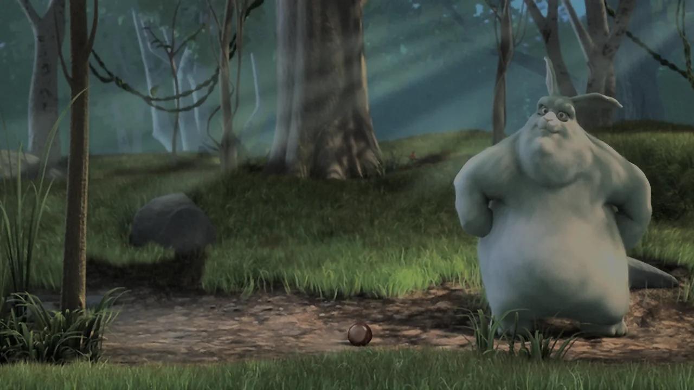
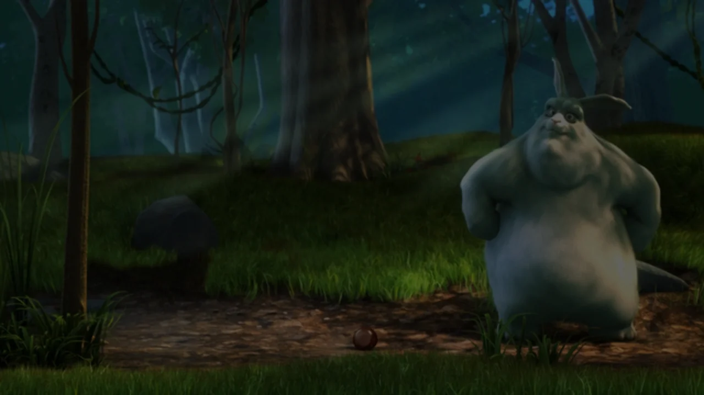
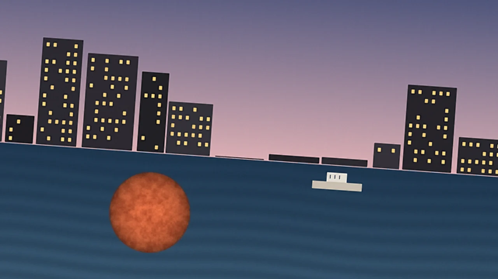
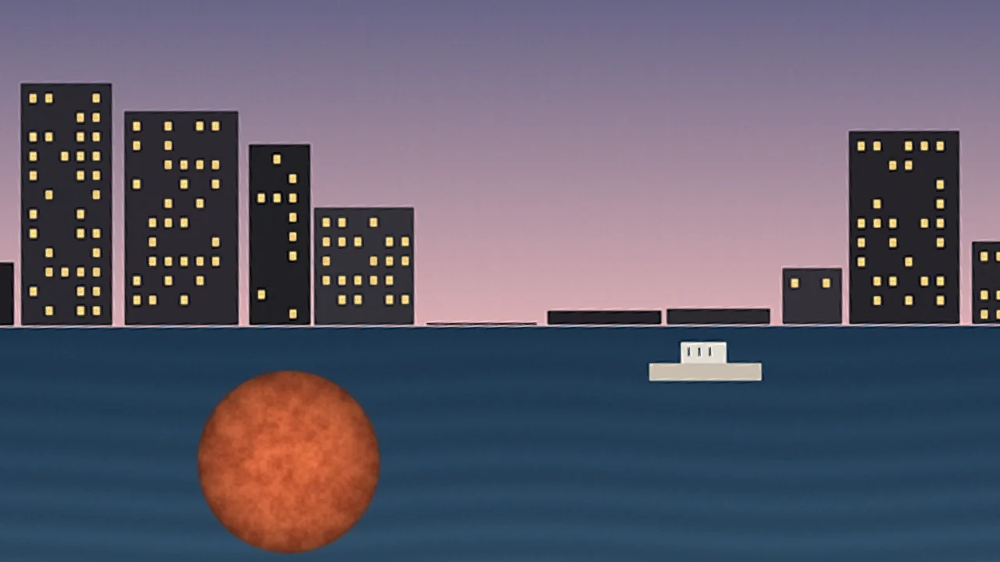
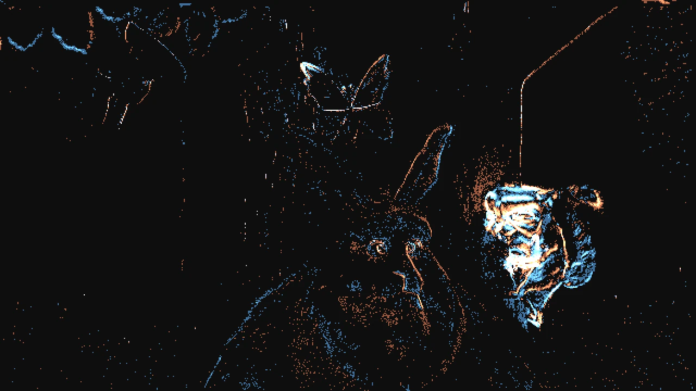

Released 2 November 2026 · SDK API 13, 4 November
AVION 0.1
A perception, vision and media kernel for machines that have to see: drones, robots, vehicles, smart cameras, and the players and AI pipelines behind them. It stabilises, levels, tracks, measures time to contact, reads a pulse and emits neuromorphic events from ordinary video, on the GPU, behind one C99 header, and allocates nothing once it runs. We measured it head to head against ffmpeg, OpenCV, ffplay and VLC, on one machine, with the same inputs and the same allocation counter.
Capabilities
Four jobs, one kernel
The same zero-allocation pipeline serves a robot's perception, an AI model's input, and a 4K HDR player. Every figure below was measured on this build; the ones against another tool come from the head-to-head further down, the rest from the engine's own test suites against a known truth.
Autonomous systems, drones and robotics
A camera's own motion read from its pixels, a steady view, a level horizon and the obstacles that are closing in, without an IMU.
- Virtual IMU0.068 px rmsThe camera's shake recovered from the background alone, against the true shake, 299 of 299 pictures.
- Stabilisation, second order14.73 → 0.92 px rmsOn screen, in the window; the filter predicted 0.94. 0 frames dropped.
- Auto-horizon±0.06° synthetic · 0.38° footageTilts of +4.5° and −6.0° read within 0.06° through letterbox and pillarbox; on a real beach film, within 0.38°. The CPU survey that finds it: 0.18 ms a 640×480 frame with AVX2.
- Black-bar matte+0.014 msBar extents added to the GPU statistics pass at 720p (0.060 → 0.074 ms); auto-crop follows them.
- Time to contact55/55 · 3.4 % medianA synthetic approach flagged on every frame; ground-plane expansion and breaking surf rejected (2 false frames on beach footage, was 91).
- Four targets, crossing-safe4 objectsTrack ids survive two objects crossing;
Ttracks,Tabmoves to the next. - Audio beam and saccade−10.3 dB off-axisThe audio zoom's beam follows the view; a sudden sound turns the view toward it (azimuth +0.996 for a right-only burst).
AI front end and neuromorphic perception
What a model needs before anything is decoded, and as a tensor when it is: the bionic cortex.
- Bitstream perception0.23 µs vs 31.1 msCuts and activity from 4K HEVC slice headers, against ffmpeg decoding each frame to score it (134,501× less CPU). LG's 4K HDR reel: 3 of 3 cuts found, 1 extra.
- Zero-copy tensor bridge0.000000 parityNCHW float32 or float16, foveated on the target, HDR tone-mapped as shown (within 0.0143 of a snapshot); the windowed engine's export equals host mode's to the last digit.
- Event camera, stabilised1,201,527 → 141Events from a still scene under a rolling shake, unstabilised against stabilised. On the moving cartoon below: 17.19 M → 1.71 M.
- Remote pulse (rPPG)72.00 BPMWith and without shake (138 if the shake is ignored); in pure Cr chroma 72.00 BPM here, 71.91 on a moving target while tracking.
- Remote vibrometry8.000 HzA ±0.3-sample mechanical vibration read on the shift channel (amplitude 0.301), the same under camera shake.
Deterministic, zero-heap engineering
All memory committed before the first frame and sealed; every hot loop vectorised. Measured against the tools people use.
- Heap allocations per 1,000 frames0 vs 132,292ffmpeg decode + scdet on 4K HEVC; OpenCV DIS 20,000, OpenCV survey 52,000. Same preloaded counter in every process.
- Motion estimation, 640×4800.51 vs 4.35 msFlow, time to contact and objects against OpenCV DIS ultrafast (flow only): 8.5× faster, one core.
- Structure-tensor survey0.179 vs 0.779 msAVX2 against OpenCV Scharr + block means: 4.3× faster.
- Verification213/213 · 213/213 · 96/96MSVC Release, MSVC Debug (
/W4 /WX), GCC with ASan + UBSan; the MSVC suites with a browser decoding video on the same iGPU.
Low-power 4K60 HDR media and audio
The player the kernel grew out of: decode on the GPU, present on time, and stay out of the way.
- CPU while paused · playing0.00 · 8.44 %720p, one logical core, playback alone; 2.8× lighter than ffplay playing. VLC plays with less: 7.66 %.
- Neural reconstruction5.4 KBA 1,356-parameter network as a D3D12 compute pass; temporal tile reuse makes static scenes 5.8× cheaper, exactly.
- Shadow lift, hum killer−41.8 to −48.5 dBShadows lifted with highlights untouched; stationary drones and 50/60 Hz hum notched under speech.
- Pinned A–B loop0.19–3.76 msA loop's turn, staged ahead: 20 of 20 waited for nothing. WSOLA speed keeps the pitch.
- Voice and snapshots9 languagesIntent control in nine languages;
Swrites a forensic BMP with a JSON sidecar of the picture's telemetry.
What it sees
The engine's own pictures, against a known truth
Each picture below is a forensic snapshot written by AVION through its C99 SDK, unaltered; what is drawn over it comes from the snapshot's sidecar and the engine's telemetry. The scenes are real footage (Big Buck Bunny) or generated, with a truth we set: an exposure, a tilt, a speed, a shake, a pulse.


Seeing into the shadows
A forest scene recorded three stops under, as a small sensor at dusk records it. Shadow lift raises the dark tones and leaves highlights from Y′ 0.75 up untouched; the neural pass reconstructs 640×360 at 1280×720 on the GPU.
Two host-mode engines on the same 30 frames (MEDIA_SENSOR_GPU, 1280×720): one neutral and bilinear, one with shadow_lift 1.0 and MEDIA_RECONSTRUCT_NEURAL; snapshot of picture 24 from each. Drag the seam.


auto-level -4.1°Level, track, and see it coming
A harbour tilted 4.0°, a boat crossing and a buoy drifting toward the camera from 5 m at 1 m/s. The engine reads the tilt from the scene's lines, keeps both objects on their track ids, and flags the buoy approaching with its time to contact.
Approach flagged on 24 pictures, from 1.83 s before contact; median TTC error 3.8 %.
Generated scene, so its lines and truth are known; 120 frames at 30/s through MEDIA_SENSOR_GPU. Boxes, ids and TTC from snapshot 110's sidecar; the line is drawn at the angle the engine measured. The inset is a second engine with media_engine_set_auto_level.

Stabilised · 21,456 events in 0.1 sA spike sensor from any camera
Each pixel fires ON (warm) or OFF (blue) when its log intensity moves by 15 %. Shaken by hand, an ordinary event camera fires everywhere; stabilised by the virtual IMU, with no gyro, what is left is what moves in the scene: the squirrel, the butterfly, the ears.
90 frames of Big Buck Bunny at 640×360, shaken up to 8.8 px across and 5.0 px down; media_poll_event_spikes after every frame, three frames drawn. Unstabilised, the 65,536-event ring overflowed: counts include the events it dropped (media_query_event_camera).
A pulse no eye can see
A 72 BPM pulse about one code deep in the skin's colour, under a camera shaking 6.7 px. The virtual IMU reads the shake off the background, the stabiliser holds the region still, and vibrometry finds the beat.
The reading each frame, after the 2.5 s it needs. The camera's motion between frames, virtual IMU against the truth: 0.031 px rms.
One still frame, the pulse added to it at 1.2 Hz and shaken, ±1 code of sensor noise, 300 frames; MEDIA_SENSOR_GPU with stabilisation from the virtual IMU (no IMU deltas given).
Embed it · SDK API 13
Your interface. AVION inside.
Give the engine a window of yours and it plays inside it, as a borderless child that follows its size. Every button, slider and colour stays yours: your interface posts commands from its own thread, and events come back. The same model as libmpv's wid and libVLC's set_hwnd, through avion.dll, which any language can load.
Building a game, a compositor or a 3D scene instead? Ask for texture output and every picture lands in shared Direct3D textures that your renderer samples itself, synchronised by shared GPU fences: no copy through the CPU, no thread waiting on either side.
Head to head
Measured against the tools people use
Same machine. Intel Core i7-10700 (8 cores, 16 threads), UHD 630 graphics, Windows 11; Linux figures from WSL2 (6.6.114.1) on the same CPU. GCC 15.2.0, ffmpeg 8.0.1 (Linux) and 9.0.2 (Windows), OpenCV 4.10.0.
Each row runs AVION and an established tool on the same input, timed the same way. On Linux, one malloc-counting library is preloaded into every process, so a heap allocation is counted identically whether it happens in AVION, ffmpeg or OpenCV. Lower is better everywhere. The better result is bold: filled in clay when AVION's, in grey when a baseline's.
| AVION 0.1 | Baseline | Baseline tool | Ratio | |
|---|---|---|---|---|
| Heap allocations | ||||
| Scan 4K HEVC Main10per 1,000 frames | 0 | 132,292 | ffmpeg 8.0.1, decode + scdet | — |
| Scan 720p H.264per 1,000 frames | 0 | 149,751 | ffmpeg, decode + scdet | — |
| Motion estimation, 640×480per 1,000 frames | 0 | 20,000 | OpenCV DIS (ultrafast), outputs reused | — |
| Structure-tensor surveyper 1,000 frames | 0 | 52,000 | OpenCV Scharr + block means | — |
| CPU per frame, one core | ||||
| Scan 4K HEVC Main10slice headers vs full decode | 0.23 µs | 31.1 ms | ffmpeg, software decode + scdet | 134,501× |
| Scan 720p H.264 | 0.22 µs | 1.96 ms | ffmpeg, software decode + scdet | 8,831× |
| Motion estimation, 640×480AVION: flow + time to contact + objects | 0.51 ms | 4.35 ms | OpenCV DIS (ultrafast), flow only | 8.5× |
| Structure-tensor survey, 640×480 | 0.179 ms | 0.779 ms | OpenCV Scharr + block means | 4.3× |
| Player CPU, 720p | ||||
| CPU while playingplayback alone, % of one core; 720p59.94, sound decoded | 8.4 % | 23.9 % · 7.7 % | ffplay · VLC (hardware decoding) | — |
| CPU while playingwith live perception (the default) | 8.9 % | — | no counterpart: neither player perceives | — |
| CPU while paused% of one logical core | 0.16 % | 0.16 % · 0.00 % | ffplay · VLC (started paused) | — |
| Cut accuracy vs scdet | ||||
| 4K HEVC Main10scdet's cuts found · extra, within 4 frames | 3 of 3 · 1 | 3 cuts | was 252 confirmed cuts (2026-11-02) | — |
| 720p H.264scdet's cuts found · extra, within 4 frames | 7 of 8 · 1 | 8 cuts | slice headers only, no pixel decoded | — |
Different jobs, stated plainly. The scan rows compare reading slice headers with decoding every pixel: that is the point of pre-decode inspection, not a like-for-like decoder race. AVION's motion step does more than DIS (time to contact, saliency, objects) but on 8×8-cell tiles, not per pixel.
Playing is where AVION does not lead: VLC plays this clip with 7.7 % of a core, AVION's demo with 8.4 % for playback alone and 8.9 % with perception live (a grid every 100 ms of media, so that tracking starts from objects already known); one run each, and runs vary by about 1.5 points, so the two AVION figures do not separate here (per-thread runs put the grids at about 3 points). Measured per thread, the presentation thread spins the last 0.45 ms before each picture's deadline (it was 1.2 ms on 2026-11-02, which kept every Present inside its deadline); now about a quarter of Presents come 0.1 ms after it on average, with no picture dropped. Paused, the demo now sleeps while nothing moves: 0.16 %, against 1.17 % on 2026-11-02. ffplay decodes in software (23.9 %).
Ratios are the baseline's time over AVION's. Allocation counts come from the Linux runs, where the counter sees every allocation in the process; timings are the Linux runs too, except the player rows (Windows). AVION's harness built with MSVC gives its own Windows timings, listed in the method section; they differ from the GCC build's by up to 48 %, in both directions.
CPU per frame to find cuts and activity
Microseconds, log scale, one core. 4K HEVC Main10 and 720p H.264, first 3,000 frames.
Heap allocations per 1,000 frames
Counted by the same preloaded library in every process; log scale. AVION's are zero.
Motion estimation per 640×480 frame
Milliseconds, log scale, one core, 570 frames of beach footage.
Structure-tensor survey per frame
Milliseconds, one core, best of 5 passes over 600 frames.
Player CPU, playing and paused
Percent of one logical core over 10 s playing and 20 s paused, same 720p clip, sound decoded at zero volume. VLC's paused figure comes from --start-paused; a posted key does not pause it.
Against doing nothing
What compensation buys
Some capabilities have no off-the-shelf equivalent to race. Here AVION is compared with itself without the technique, or with ground truth, on generated footage whose truth is known.
Shake left in the picture
Pixels rms on screen and at the horizon.
Events from a still scene
Neuromorphic event camera under rolling shake, log scale.
Pulse read through camera shake
Error from the true 72 BPM.
Virtual IMU: camera shake recovered from pixels alone within 0.068 px rms of the truth. Window stabilisation: 14.73 → 0.92 px rms (the filter predicted 0.94), 0 frames dropped.
Proofs
The mathematics the code implements
Each card states a model, then the measurement that checks it. Symbols follow the source files named.
A stabiliser solved exactly per frame
Why second order. A one-pole filter with the same 0.35 s pan delay leaves 19 % of a 2.3 Hz shake; the Butterworth leaves 7.8 %. The first window runs measured exactly the one-pole's residual.
Camera rotation is low-passed; what passes is the operator's intent, the rest is cancelled in the view. Move the delay to see the trade between lag on a pan and shake left over.
Measured: 14.73 → 0.92 px rms on screen, predicted 0.94; pan lag 0.348 s.
Time to contact from optical divergence
The surf test. A breaking wave expands along one axis only. Requiring both diagonal terms, in proportion, rejects it; the ground plane's own expansion is modelled and subtracted.
A surface approaching at constant speed expands about its focus; over each 5×5-tile window an affine fit of the flow gives the divergence.
Measured: synthetic approach flagged on 55 / 55 frames, median TTC error 3.4 %; beach footage falsely looming on 2 frames instead of 91.
A pulse at the frames' own timestamps
Irregular time. Real frame times jitter. Evaluating the transform at each tk instead of an assumed rate is what keeps 72.00 exact under jittered timing.
Y′, Cb, Cr and sub-pixel displacement of a region are detrended and Hann-weighted; the peak is refined by golden-section search.
Measured: 72.00 BPM with and without shake (138 if shake is ignored); chroma-only pulse 71.91 BPM while tracking.
Memory as an equation
All memory is committed before playback: a core region plus one fixed region per enabled module, then sealed. Leaving a module out removes exactly its region and threads.
Today: core 192 MiB (177.0 measured), modules 48.4 MiB and up to 5 threads. Counted above: 0 allocations per 1,000 frames.
Method
How the numbers were made
Reproduce. bash tools/bench/run_linux.sh in WSL, then python tools/bench/run_windows.py and python tools/bench/report.py. Raw lines and the summary ship in the evaluation bundle.
Inputs. Two real files: LG's 4K60 HDR demo reel (HEVC Main10, 3840×2160) and a 720p59.94 H.264 beach film, first 3,000 frames of each; and 600 frames of the beach film at 640×480 grey for the motion and survey rows, read whole into memory by every program.
Allocations. A small library preloaded with LD_PRELOAD counts every malloc, calloc, realloc and aligned allocation in the process. AVION's harness and the OpenCV program read the count around their timed loops. For ffmpeg, the steady-state rate is the difference between a 1,000-frame and a 3,000-frame run, so start-up cancels. The OpenCV program creates every output once and reuses it, as a careful user would.
Time. Wall-clock time of the loop over all frames, divided by the frame count; ffmpeg's from its own -benchmark user and system time. "One core" means one thread: -threads 1 for ffmpeg, cv::setNumThreads(1) for OpenCV. With all threads, ffmpeg decodes the 4K stream in 9.45 ms of wall time per frame (103.1 ms of CPU); on Windows with D3D11 hardware decoding, 30.75 ms of wall time.
Windows. AVION's harness under MSVC: scan 0.34 µs (4K HEVC) and 0.24 µs (720p H.264) per frame, motion 0.56 ms, survey 0.154 ms (AVX2). Players: each started on the clip, 5 s to settle, CPU from GetProcessTimes over 10 s playing, then a space key, 2 s, and 20 s paused.
Verification of this build. MSVC /W4 /WX, CTest serial: Release 213/213 passed; Debug 213/213 passed. GCC 13.3 result lines (-O2, ASan + UBSan): 96/96 passed. The MSVC suites ran with a browser open and decoding video on the same iGPU; the GPU-bound tests judge each measure against a control run under the same load, and the capture tests hear only their own process.
Cut accuracy. ffmpeg's scdet scores every decoded frame; its cut times, as frame numbers, are the reference. A cut AVION reports within 4 frames of one counts as found (the inspector works in decode order). On LG's reel it reports 765, 1,325, 2,125 and 2,613 against scdet's 765, 2,128 and 2,612. The extra one (1,325) is a still shot, checked by eye. The cut from champagne bubbles to slow honey, where every frame's cost falls, is found by a second rule that reads sustained falls (a burst of new detail that stops at once after more than half a second reads the same). On 2026-11-02 it confirmed 252: the reel's hierarchical GOP (an anchor every 4 frames costing 3-5× the others) and its clock-scheduled keyframes read as cuts. The 720p film: 736, 1,147, 1,635, 1,716, 2,035, 2,266, 2,542 and 2,730 against 410, 736, 1,147, 1,635, 2,035, 2,265, 2,542 and 2,730.
The showcase. tools/showcase/make_showcase.py prepares each scene and its truth: clips of Big Buck Bunny (decoded to RGBA by ffmpeg, which only prepares the input), or the generated harbour. media_showcase, a C99 program that uses nothing but c_api.h, pushes them through media_engine_ingest_video_frame in host mode and keeps what the engine gives back: snapshots (media_engine_save_snapshot), every picture's telemetry and the event camera's spikes. The pictures are those snapshots; the overlays are drawn from their sidecars. Comparisons with the truth (the TTC error, the virtual IMU's rms) are computed from the two.
What these numbers do not say. Two files are not a corpus: cut accuracy here is a sanity check, not a recall figure. The motion rows compare tile flow with dense per-pixel flow. WSL2 runs in a virtual machine on the same CPU. The showcase's scenes are single runs with a truth we chose, not a benchmark.
Limits
What 0.1 does not do yet
- Whole-frame stabilisation. One translation and one rotation per frame: no rolling-shutter or parallax correction.
- Cuts from costs alone. A cut landing exactly on an encoder's scheduled keyframe can be missed, and a burst of new detail that lasts over half a second and stops at once can read as a cut: the inspector sees what each picture cost, not what it shows.
- Formats. MP4 with H.264 or HEVC and AAC or PCM. AV1 is refused; the platform AAC decoder takes at most 6 channels.
- Platforms. Windows playback is fully exercised; host mode passes on Linux. Android and Apple toolchains have not been run.
- Occlusion. An object hidden behind another for more than 0.5 s loses its track.
- A horizon needs level lines. The tilt is read from the scene's straight edges. Big Buck Bunny's meadow, tilted 4°, reads +8.53°: its grass and sloping hills hold no level line, which is why the showcase levels a harbour.
Download
Evaluate it on your own machine
One archive: the C99 header and the SDK guide, the Release demo, avion.dll and static libraries, samples in C#, Python and C, the head-to-head's raw data with every script that made it, and the Release suite's log. No engine source code is published.
Evaluation release · SDK API 13 · 4 November 2026
AVION-0.1-Evaluation.zip
Digests are for integrity checking; the manifest is not cryptographically signed.
Inside
- The SDKinclude/media/c_api.h and docs/sdk.md: one C99 header, an opaque handle, host-provided storage
- The enginebin/media_player_demo.exe and 19 static libraries, Release, x64
- avion.dllThe whole SDK as a DLL for C#, Python, Node, Rust or any C caller; Windows' own libraries only
- SamplesPlayers with their own interface in C# and Python, the C99 quickstart and the showcase host
- The head-to-headReport, raw results, summary and every script, against ffmpeg, OpenCV, ffplay and VLC
- EvidenceThe Release suite's log and this build's engineering log entry
media_engine_config_t config;
media_engine_config_init(&config);
config.playback = MEDIA_PLAYBACK_HOST; /* The host drives: live sensors, any platform. */
config.modules = MEDIA_MODULE_TELEMETRY; /* Perception: flow, TTC, objects, vibrometry. */
media_engine_t* engine = NULL;
media_engine_create(&config, storage, media_engine_storage_bytes(), &engine);
media_sensor_config_t sensor;
media_sensor_config_init(&sensor);
sensor.width = W; sensor.height = H; /* The arena is committed and sealed here. */
media_engine_open_sensor(engine, &sensor);
media_sensor_frame_t frame = {0};
frame.struct_size = sizeof frame; frame.format = MEDIA_PIXEL_NV12;
frame.width = W; frame.height = H;
frame.planes[0] = luma; frame.planes[1] = chroma;
frame.strides[0] = frame.strides[1] = W;
for (unsigned f = 0; f < FRAMES; ++f) {
make_frame(f); /* Your camera's NV12 frame. */
frame.timestamp_100ns = (int64_t)f * 333333;
media_engine_ingest_video_frame(engine, &frame); /* No allocation. */
if (f == 0) { /* Once a picture is held. */
media_event_camera_config_t ec;
media_event_camera_config_init(&ec); /* 15 % contrast, stabilised. */
media_engine_set_event_camera(engine, &ec);
}
t.struct_size = sizeof t;
if (media_query_frame_telemetry(engine, &t) == MEDIA_OK && (t.flags & MEDIA_TELEMETRY_LOOMING))
++looming; /* t.ttc_seconds, t.hazard_x/y, t.objects[] */
uint32_t n = 0; /* Neuromorphic ON/OFF spikes since the last poll. */
while (media_poll_event_spikes(engine, spikes, 4096, &n) == MEDIA_OK && n) events += n;
}
media_tensor_request_t request; /* 224 x 224, RGB planes, float32 in [0, 1], the fovea. */
media_tensor_request_init(&request);
request.normalize = MEDIA_TENSOR_IMAGENET; /* Ready for a torchvision-style model. */
info.struct_size = sizeof info;
media_export_foveated_tensor(engine, &request, tensor, sizeof tensor, &info);
media_engine_close(engine);
media_engine_destroy(engine);The core of samples/quickstart.c, which builds with /W4 /WX and runs against this release: looming flagged on 41 of 90 frames, 268,614 events, a 602,112-byte tensor.